MORPHOLOGY OF FLOWERING PLANTS
Structural Organisation in Plants and Animals (Unit 2): Why Morphology/Anatomy Matter
- Gross structural features (external + internal)
- Observable living phenomena (perceivable life processes/behaviours as seen directly)
- Provides the structural context needed to study living processes (physiology).
- Helps frame research questions in physiology and evolutionary biology.
- Explains the structural basis of physiological and behavioural phenomena.
Chapter 5Morphology of Flowering Plants
Chapter 6Anatomy of Flowering Plants
Chapter 7Structural Organisation in Animals
Katherine Esau (1898–1997): Significance in Plant Anatomy
BornUkraine, 1898
EducationAgriculture in Russia + Germany; doctorate (1931) in the United States
Early research findingCurly top virus spreads via phloem (food-conducting tissue)
- Plant Anatomy (1954): developmental approach; huge worldwide impact; revived the discipline.
- The Anatomy of Seed Plants (1960): called “Webster’s of plant biology” for its encyclopaedic nature.
Honours (1957)Elected to the National Academy of Sciences — sixth woman to receive that honour
Honours (1989)National Medal of Science awarded by President George Bush
- Legacy: On her death (1997), Peter Raven (Missouri Botanical Garden) noted she “absolutely dominated” the field even at age 99.
Morphology of Flowering Plants: Overview and Need for Terminology
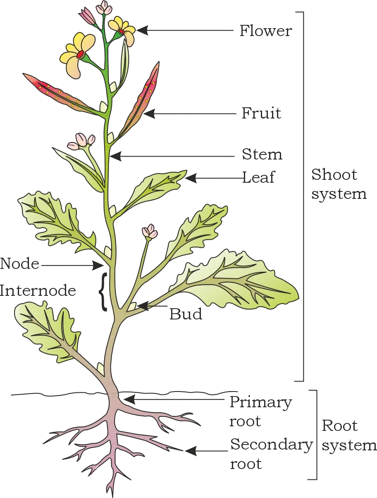
Rootsunderground organ system
Stemsascending axis
Leavesmain photosynthetic organ
Flowersreproductive structure
Fruitsdevelop from flower/ovary
- Standard technical terms
- Standard definitions
- Variations in parts as adaptations to environment (habitat, protection, climbing, storage, etc.)
Root system
→Underground part of flowering plant
Shoot system
→Above-ground portion
The Root (5.1)
Origin and Types of Root Systems
- Lateral roots arise from the primary root in several orders:
- Secondary roots
- Tertiary roots (and higher orders)
Tap root systemPrimary root + its branches; typical of many dicots
Fibrous root systemMany roots from stem base; typical of many monocots
Adventitious rootsRoots from parts other than radicle
- Tap root system: primary root persists and branches; example: mustard.
- Fibrous root system: in monocotyledonous plants, the primary root is short-lived and replaced by many roots originating from the base of the stem; example: wheat.
- Adventitious roots: arise from parts other than radicle; examples: grass, Monstera, banyan tree.
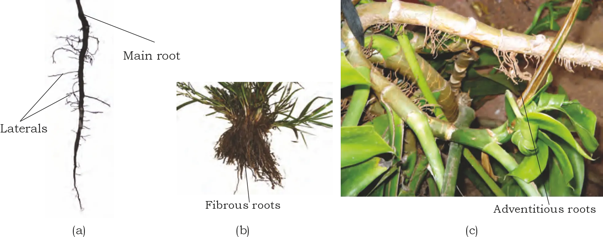
Functions of the Root System
- Absorption of water and minerals from soil
- Anchorage (proper support/firm fixing of plant parts)
- Storage of reserve food material
- Synthesis of plant growth regulators
Regions of the Root (5.1.1)
Root cap
→
Meristematic region
→
Region of elongation
→
Region of maturation
- Root cap: thimble-like structure covering the apex; protects the tender root tip as it penetrates soil.
- Region of meristematic activity: a few millimetres above root cap; cells are:
- Very small
- Thin-walled
- Have dense protoplasm
- Divide repeatedly (mitotic activity)
- Region of elongation: cells just proximal to the meristematic region undergo rapid elongation and enlargement; responsible for increase in root length.
- Region of maturation: proximal to elongation zone; cells differentiate and mature.
- Root hairs: in maturation region, some epidermal cells form fine, delicate, thread-like root hairs that absorb water and minerals from soil.
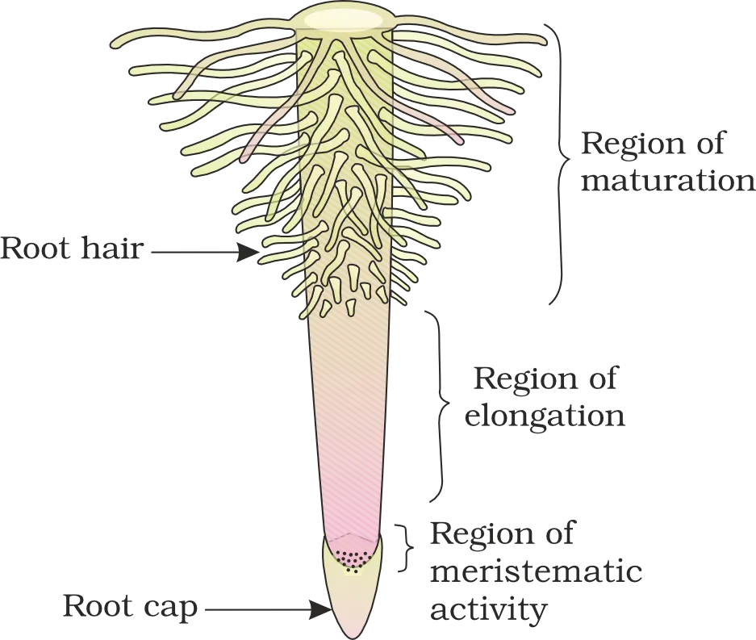
The Stem (5.2)
- Origin: develops from the plumule of the embryo in a germinating seed.
Nodesregions of the stem where leaves are born
Internodesportions between two nodes
- Buds: stem bears buds that may be:
Terminal budat the apex
Axillary budin the axil of a leaf
- Appearance with age: generally green when young; later often becomes woody and dark brown.
- Spreads out branches bearing leaves, flowers, fruits
- Conducts water, minerals and photosynthates
- May also perform: storage of food, support, protection, and vegetative propagation
The Leaf (5.3)
- Site of origin on plant: develops at the node.
- Axil and axillary bud: leaf bears a bud in its axil; the axillary bud later develops into a branch.
- Origin (developmental): leaves originate from shoot apical meristems.
Leaf arrangement
→Acropetal order
→Younger leaves nearer the tip (towards apex)
- Importance: leaves are the most important vegetative organs for photosynthesis.
Structure of a Typical Leaf
Leaf baseattaches leaf to the stem; may bear stipules; may form sheath/pulvinus
Petiolestalk that holds lamina to light; allows movement/cooling
Lamina (leaf blade)green expanded part with veins/veinlets; major photosynthetic surface
Leaf base, stipules, sheath and pulvinus
- Leaf base attaches the leaf to the stem.
- Stipules = two lateral small leaf-like structures that the leaf base may bear.
Monocotyledonsleaf base expands into a sheath covering stem partially or wholly
Leguminous plantsswollen leaf base called pulvinus
Petiole: functions and significance
- Positions the lamina toward light (helps hold the blade to light).
- Long, thin, flexible petioles allow leaf blades to flutter in wind → cools the leaf and brings fresh air to the leaf surface.
Lamina (leaf blade), midrib and veins
- Lamina is the green expanded part of leaf, containing veins and veinlets.
- A usually prominent middle vein is the midrib.
Veins: rigidityprovide rigidity to the leaf blade
Veins: transportchannels for water, minerals and food materials
- Leaf lamina varies in shape, margin, apex, surface, and extent of incision.
Venation
Reticulate venationveinlets form a network
Parallel venationveins run parallel to each other within the lamina
- Dicotyledonous leaves generally show reticulate venation.
- Monocotyledonous leaves characteristically show parallel venation.
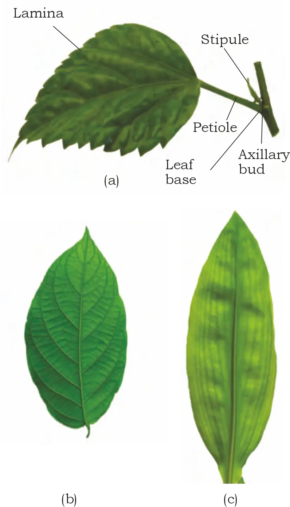
Types of Leaves (Simple and Compound)
- Simple leaf: lamina is entire, OR if incised, the incisions do not touch the midrib.
- Compound leaf: incisions of lamina reach up to the midrib, breaking it into a number of leaflets.
- An axillary bud is present in the axil of the petiole in both simple and compound leaves.
- No bud occurs in the axil of leaflets of a compound leaf.
Types of compound leaves
Pinnately compoundleaflets on a common axis called rachis (represents midrib); example: neem
Palmately compoundleaflets attached at a common point at tip of petiole; example: silk cotton
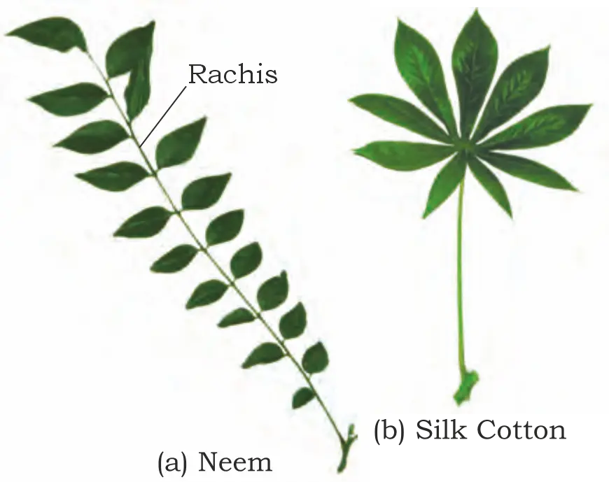
Phyllotaxy
Alternatesingle leaf at each node in alternate manner
Oppositepair of leaves at each node, opposite each other
Whorledmore than two leaves at a node forming a whorl
- Alternate: china rose, mustard, sunflower
- Opposite: Calotropis, guava
- Whorled: Alstonia
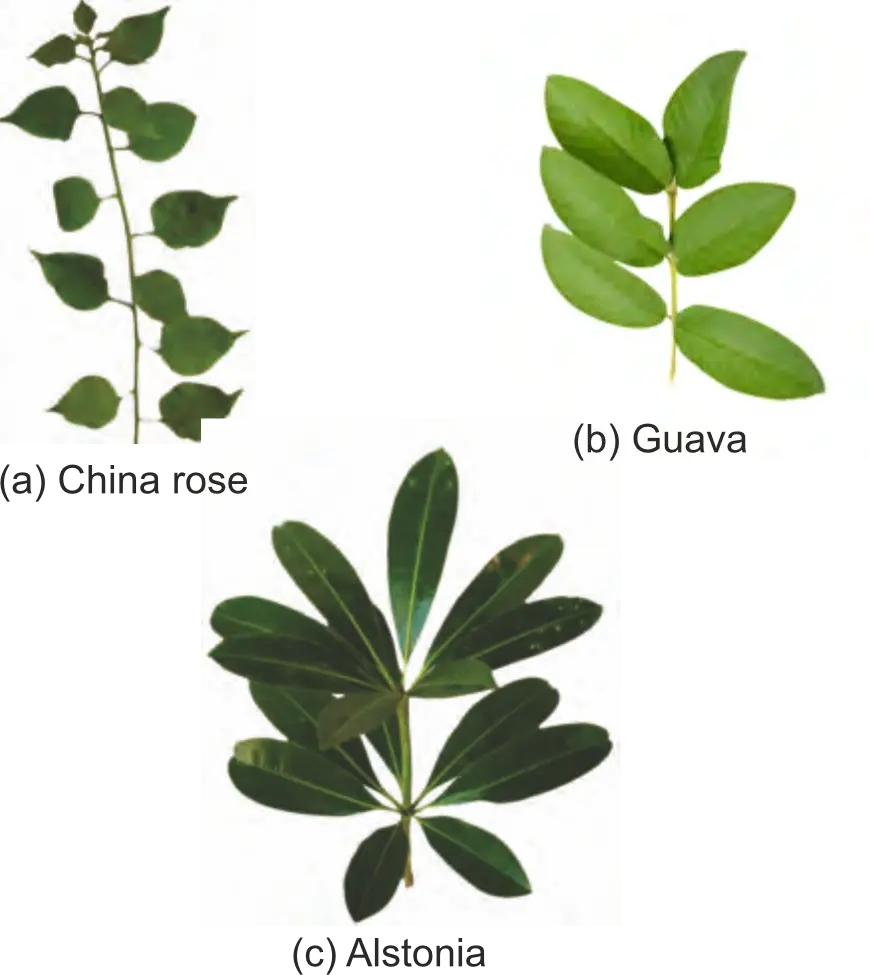
AOW
The Inflorescence
- A flower is a modified shoot.
- In flower formation, the shoot apical meristem changes into a floral meristem.
- Internodes do not elongate and the axis becomes condensed.
- The apex produces floral appendages laterally at successive nodes instead of leaves.
- If a shoot tip transforms into a flower, it is always solitary.
- Inflorescence = arrangement of flowers on the floral axis.
Think “shoot → switches job”: instead of making leaves + long internodes, it makes flower parts on a short, condensed axis.
Major types of inflorescence: racemose vs cymose
Racemosemain axis continues to grow; flowers borne laterally in acropetal succession
Cymosemain axis terminates in a flower (limited growth); flowers borne in basipetal order
Racemose: axis keeps growing
→flowers lateral
→acropetal succession
Cymose: axis ends in a flower
→growth limited
→basipetal order
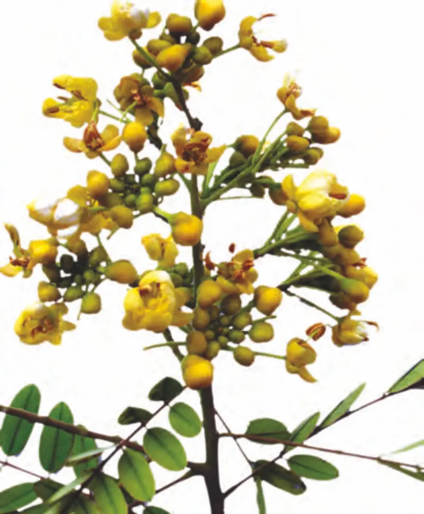
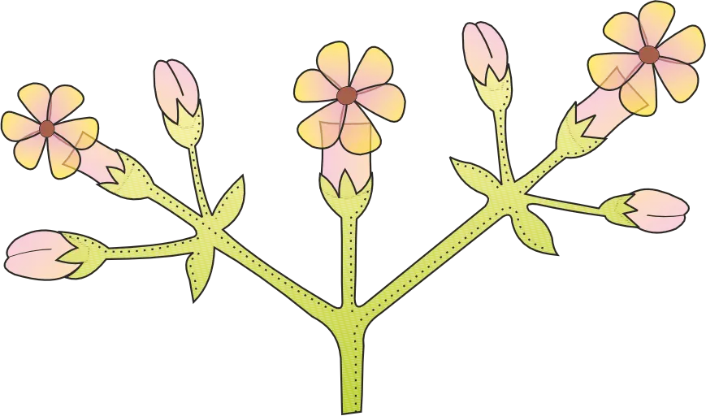
The Flower
- Flower = reproductive unit in angiosperms; meant for sexual reproduction.
- Floral whorls are arranged successively on the swollen end of the stalk (pedicel) called thalamus or receptacle.
- A typical flower has four whorls: calyx, corolla, androecium, gynoecium.
- Accessory organs: calyx + corolla
- Reproductive organs: androecium + gynoecium
Perianth
Sexuality: bisexual vs unisexual flowers
Bisexualhas both androecium and gynoecium
Unisexualhas either only stamens or only carpels
Symmetry: actinomorphic, zygomorphic, asymmetric
- Actinomorphic (radial symmetry): can be divided into two equal radial halves in any radial plane through the centre.
- Zygomorphic (bilateral symmetry): can be divided into two similar halves in only one particular vertical plane.
- Asymmetric (irregular): cannot be divided into two similar halves by any vertical plane through the centre.
- Actinomorphic examples: mustard, datura, chilli
- Zygomorphic examples: pea, gulmohur, bean, Cassia
- Asymmetric example: canna
Merosity: trimerous, tetramerous, pentamerous
- Trimerous if floral appendages are in multiples of 3
- Tetramerous if in multiples of 4
- Pentamerous if in multiples of 5
Bracts: bracteate vs ebracteate
- Bract = reduced leaf found at the base of the pedicel.
- Bracteate flowers = flowers with bracts.
- Ebracteate flowers = flowers without bracts.
Position of floral parts on thalamus: hypogynous, perigynous, epigynous
Hypogynousgynoecium highest; other parts below; ovary superior
Perigynousgynoecium central; other parts on rim of thalamus at same level; ovary half inferior
Epigynousthalamus margin encloses ovary and fuses; other parts above; ovary inferior
Quick cue: “Hypo = below, epi = above” (think where the other whorls sit relative to the ovary).
- Hypogynous (superior ovary): mustard, china rose, brinjal
- Perigynous (half inferior ovary): plum, rose, peach
- Epigynous (inferior ovary): guava, cucumber, ray florets of sunflower
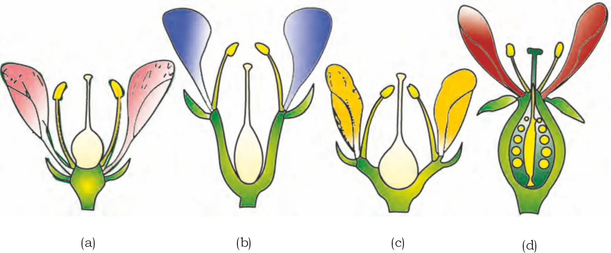
Parts of a Flower
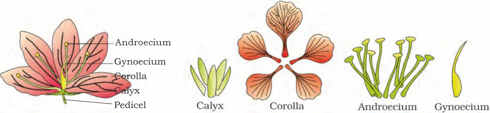
Calyxsepals
Corollapetals
Androeciummale reproductive whorl
Gynoeciumfemale reproductive whorl
Calyx
- Calyx = outermost whorl; members are sepals.
- Sepals are generally green, leaf-like, and protect the flower in bud stage.
- Calyx may be:
- Gamosepalous = sepals united
- Polysepalous = sepals free
Corolla
- Corolla is composed of petals.
- Petals are usually brightly coloured to attract insects for pollination.
- Corolla may be:
- Gamopetalous = petals united
- Polypetalous = petals free
- Corolla shows great variation in shape and colour.
Tubulartube-like
Bell-shapedcampanulate form
Funnel-shapedwidens gradually like a funnel
Wheel-shapedflat, spreading like a wheel
Aestivation
Aestivation (Arrangement of sepals/petals in a whorl)
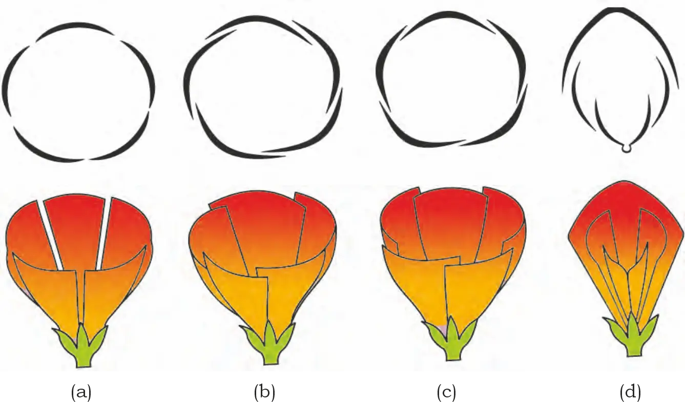
Types of aestivation
ValvateMargins just touch; no overlap (e.g., Calotropis)
TwistedOne margin overlaps the next consistently (e.g., china rose, lady’s finger, cotton)
ImbricateOverlap occurs but not in a definite direction (e.g., Cassia, gulmohur)
Vexillary / PapilionaceousLargest petal (standard) overlaps wings; wings overlap keel (e.g., pea, bean)
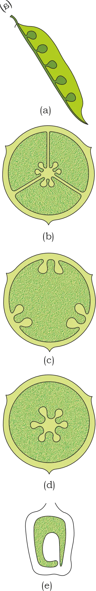
Androecium
- Filament (stalk)
- Anther
Attachment and cohesion of stamens
Adhesion
→United with other floral parts
Cohesion
→United among themselves
EpipetalousStamens attached to petals (e.g., brinjal)
EpiphyllousStamens attached to perianth (e.g., lily)
PolyandrousStamens free from each other
MonoadelphousStamens united into one bundle (e.g., china rose)
DiadelphousStamens united into two bundles (e.g., pea)
PolyadelphousStamens united into more than two bundles (e.g., citrus)
Gynoecium
- Stigma = receptive surface for pollen (usually at tip)
- Style = elongated tube connecting stigma and ovary
- Ovary = enlarged basal part containing ovules
Apocarpous vs syncarpous gynoecium
ApocarpousCarpels free (e.g., lotus, rose)
SyncarpousCarpels fused (e.g., mustard, tomato)
Ovules
→Seeds
Ovary
→Fruit
Placentation (arrangement of ovules in ovary)
MarginalPlacenta as ridge along ventral suture; ovules in two rows (e.g., pea)
AxilePlacenta axial; ovules attached to it in a multilocular ovary (e.g., china rose, tomato, lemon)
ParietalOvules on inner wall/peripheral region; ovary one-chambered; may become two-chambered due to false septum (e.g., mustard, Argemone)
Free centralOvules on central axis; septa absent (e.g., Dianthus, Primrose)
BasalPlacenta at base; single ovule (e.g., sunflower, marigold)
The Fruit
General structure of fruit
- Pericarp (fruit wall)
- Seeds
- Epicarp (outer)
- Mesocarp (middle)
- Endocarp (inner)
Drupe: mango and coconut
- Mango: pericarp clearly differentiated into thin epicarp, fleshy edible mesocarp, and stony hard endocarp.
- Coconut: also a drupe; mesocarp is fibrous.
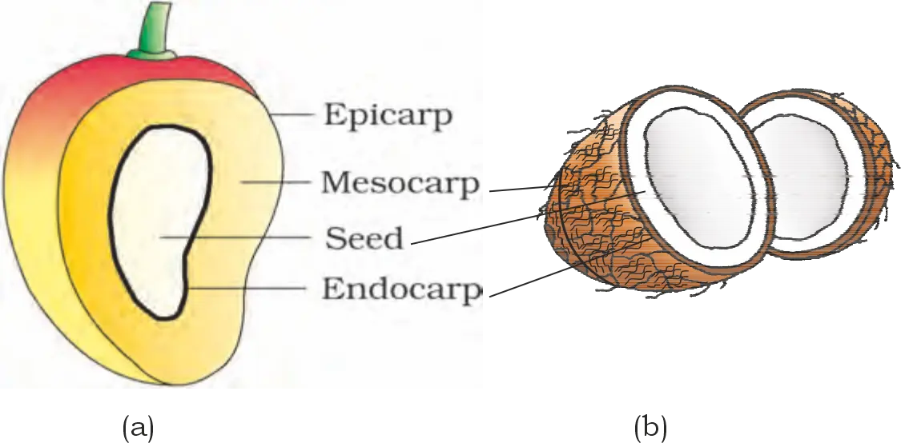
The Seed
- Radicle
- Embryonal axis
- Cotyledons: one (e.g., wheat, maize) or two (e.g., gram, pea)
Structure of a dicotyledonous seed
- Testa (outer)
- Tegmen (inner)
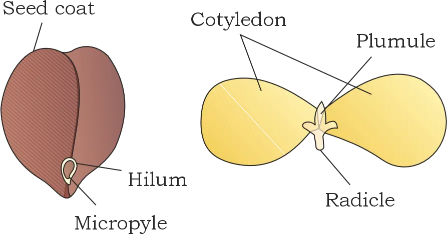
Endospermic seedsEndosperm persists as food-storing tissue (e.g., castor)
Non-endospermous seedsEndosperm absent in mature seed (e.g., bean, gram, pea)
Structure of a monocotyledonous seed (maize as example)
- Seed coat in cereals (e.g., maize) is membranous and generally fused with fruit wall.
- Endosperm is bulky and stores food.
- Outer covering of endosperm separates the embryo by a protein-rich aleurone layer.
- Embryo is small, located in a groove at one end of endosperm.
- Embryo has one large shield-shaped cotyledon called scutellum and a short axis with plumule and radicle.
- Protective sheaths: plumule in coleoptile; radicle in coleorhiza.
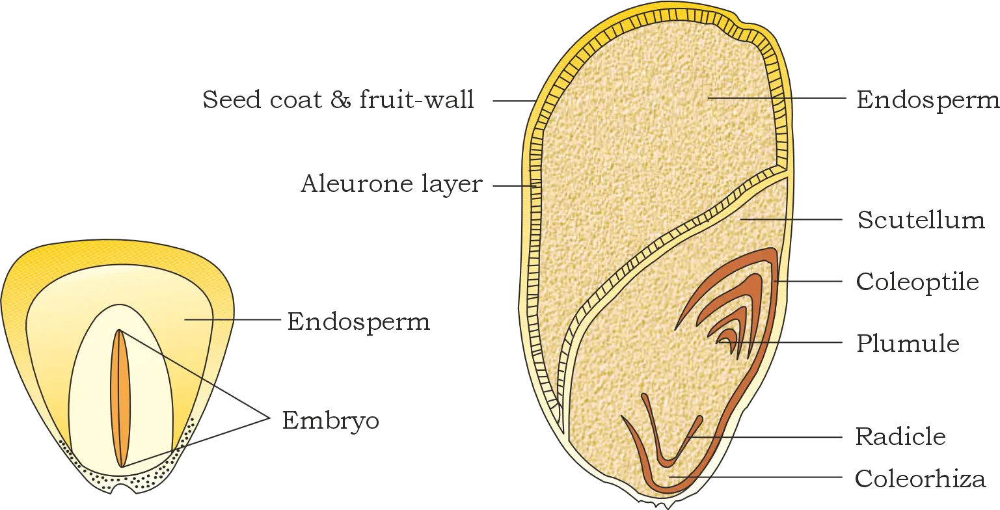
C-C
Semi-technical description of a typical flowering plant
Correct sequence of description
Habit
→
Vegetative characters (root, stem, leaves)
→
Floral characters (inflorescence, flower parts)
→
Floral diagram + Floral formula
Brbracteate
Kcalyx
Ccorolla
Pperianth
Aandroecium
Ggynoecium
G (bar below)superior ovary
G (bar above)inferior ovary
♂male
♀female
⚥bisexual
⊕actinomorphic
Floral Diagram & Floral Formula (representation of floral features)
How features are shown in floral formula/diagram
- Fusion (cohesion) of similar floral parts is indicated by enclosing the number in brackets in the floral formula (e.g., fused sepals/petals).
- Adhesion (union between different whorls) is shown by a line drawn above the symbols of the floral parts involved.
- Zygomorphic nature (bilateral symmetry) is specifically represented by the appropriate symbol in the floral formula (as used earlier in the chapter).
Standard order/arrangement in a floral diagram
Calyx (outermost)
→
Corolla
→
Androecium
→
Gynoecium (centre)
- A floral diagram provides information about: number of parts, their arrangement, and their relations with one another.
- Floral formula and floral diagram together summarise: cohesion (within a whorl) and adhesion (between whorls).
- The given example referenced (Fig. 5.16) represents mustard (Family: Brassicaceae).
Family Solanaceae (Potato family)
Distribution
Vegetative characters
HabitMostly herbs, shrubs; rarely small trees
StemHerbaceous (rarely woody), aerial; erect, cylindrical, branched; solid or hollow; hairy or glabrous; underground stem in potato
LeavesAlternate; simple (rarely pinnately compound); exstipulate; reticulate venation
- Potato (Solanum tuberosum) has an underground stem (tuber) — important as a stem modification within this family description.
- Leaves are typically alternate and exstipulate with reticulate venation.
Floral characters
InflorescenceSolitary, axillary or cymose (as in Solanum)
FlowerBisexual; actinomorphic
Calyx5 sepals; united; persistent; valvate aestivation
Corolla5 petals; united; valvate aestivation
Androecium5 stamens; epipetalous
GynoeciumBicarpellary; obliquely placed; syncarpous; ovary superior; bilocular; axile placentation; placenta swollen with many ovules
- Flower: bisexual, actinomorphic
- Calyx and corolla: pentamerous and gamosepalous/gamopetalous (united), with valvate aestivation
- Androecium: 5 stamens, epipetalous (stamens attached to petals)
- Gynoecium: bicarpellary, syncarpous, superior ovary, typically bilocular with axile placentation and many ovules
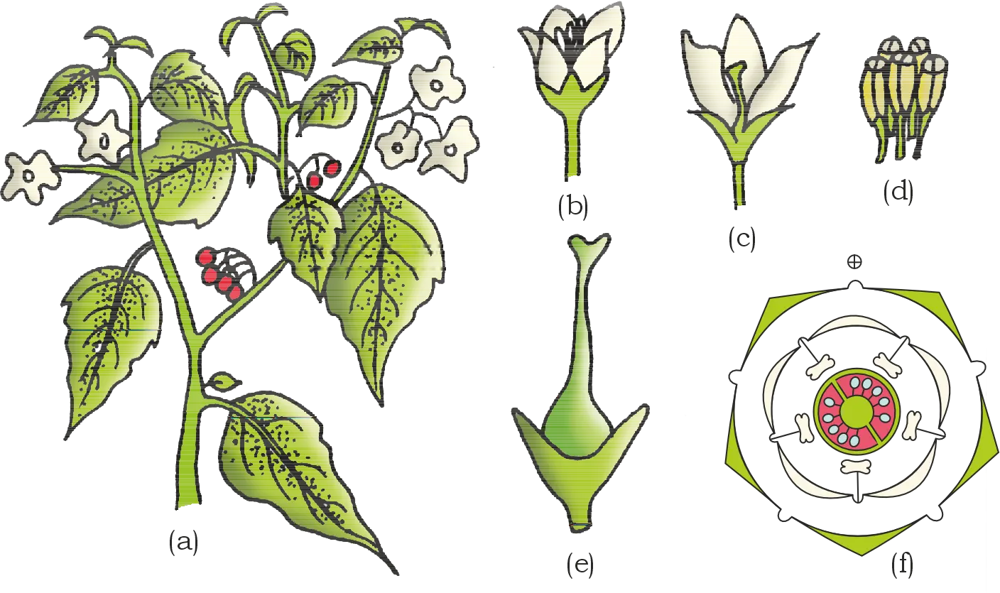
Fruit and seed
FruitBerry or capsule
SeedsMany; endospermous
Floral formula (as given)

Economic importance
Foodtomato, brinjal (eggplant), potato
Spicechilli
Medicinebelladonna, ashwagandha
Fumigatorytobacco
Ornamentalspetunia
Chapter Summary (Morphology of Flowering Plants — key takeaways from this portion)
Overall variation and plant body organisation
- They possess well-developed root system and shoot system.
Root system: types and modifications
- Root system is either tap root or fibrous.
- Generally: dicots have tap roots; monocots have fibrous roots.
- Roots may be modified for: storage of food, mechanical support, and respiration.
Shoot system: parts and stem/leaf features
- Leaves show variations in shape, size, margin, apex, and extent of incisions of the lamina.
Flower, inflorescence, fruit and seed (core morphological sequence)
Flower (modified shoot)
→
Fertilisation
→
Ovary → Fruit
→
Ovules → Seeds
- Flowers are arranged in different types of inflorescences.
- Flowers vary in: symmetry, ovary position relative to other parts, arrangement of petals, sepals, ovules, etc.
- After fertilisation: ovary → fruit; ovules → seeds.
- Seeds may be monocotyledonous or dicotyledonous, and vary in shape, size, and viability period.